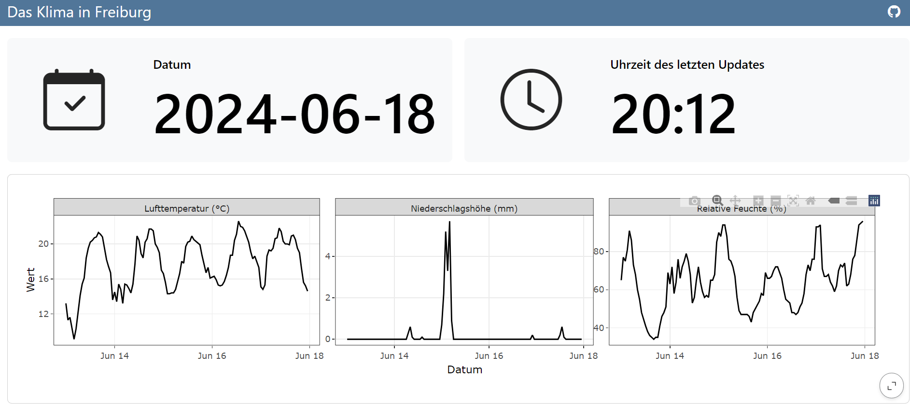

Dashboards are cool and self updating dashboards are even cooler! This is short insight how to create something like this.

Introduction
The idea of having interactivity and updating content on a static website somehow fascinates me! So I tried to use rvest to scrape a german website which hosts relative up-to-date discharge values of rivers in Baden-Würrtemberg. Sadly I was not able to read the table (yet!), but I tried something else.
The German Weather Service (DWD) has a R-package called rdwd. It is a great tool to access a lot of different climate data in Germany and the world! So the idea was to build a dashboard to present the recent climate in Freiburg and add more features in the near future.
What is a Quarto dashboard?
A Quarto dashboard is a website consisting of one or more pages, where you can visualize your data, do some monitoring and also add interactivity (Shiny and ojs)! To create one yourself, you just have to create a new Quarto project with a .qmd file and change the format to dashboard. Make sure to enable renv and git.
Note: the output file is called
index.html, so the website can be hosted later over GitHub pages.
---
title: "Das Klima in Freiburg"
format:
dashboard:
output-file: index.html
---Fill the dashboard
The first thing to do, is to get the data from the DWD API. Therefore we load the package rdwd and also bit64, which is required. With selectDWD() you can select the location of your station, the variables you want to download and the time resolution. In my case I selected Freiburg, air temperature and precipitation in an hourly resolution. There are many more variables to download, an exact tutorial can be found in the documentation.
# Load required packages
require(bit64)
require(rdwd)
require(lubridate)
require(plotly)
require(dplyr)
require(tidyr)
require(ggplot2)
# get link to DWD station in Freiburg (for temperature and precipitation, hourly)
link <- selectDWD("Freiburg", res="hourly", var=c("air_temperature", "precipitation"), per="recent")
# download and read DWD data
file <- dataDWD(link, read = T, varnames = T)
# get current time and data and make sure tz='Berlin/Germany'
currTime <- as.POSIXct(Sys.time()) + 2*60*60 You can create the layout of the dashboard using ## Row or ## Column in your document. Here I added some value boxes to display the date and time of the last update of the dashboard. For the icon you can use all the Bootstrap Icons. To change the color check out the documentation.
#| content: valuebox
#| title: "Datum"
list(
icon = "calendar-check",
color = "light",
value = as.Date(currTime)
)#| content: valuebox
#| title: "Uhrzeit des letzten Updates"
list(
icon = "clock",
color = "light",
value = strftime(currTime, format="%H:%M")
)Now we just need to wrangle our data a little and visualize it. I created a ggplot with a facet_wrap() and used ggplotly() to give the graph some interactivity.
# make a tibble of the downloaded data and tidy up!
df <- file$hourly_air_temperature_recent_stundenwerte_TU_01443_akt |>
left_join(file$hourly_precipitation_recent_stundenwerte_RR_01443_akt, by = "MESS_DATUM") |>
select(-c(eor.y,QN_8,QN_9,eor.x,STATIONS_ID.y)) |>
pivot_longer(cols = -c(STATIONS_ID.x, MESS_DATUM))
#wanted time period to display the data (in this case 5 days)
time_period <- c(as.Date(currTime) - 5, as.Date(currTime))
# Filter the data and rename variables
df_plot <- df |>
filter(MESS_DATUM >= time_period[1]) |>
mutate(name = case_when(
name == 'TT_TU.Lufttemperatur' ~ 'Lufttemperatur (°C)',
name == 'RF_TU.Relative_Feuchte' ~ 'Relative Feuchte (%)',
name == 'R1.Niederschlagshoehe' ~ 'Niederschlagshöhe (mm)',
name == 'RS_IND.Niederschlagsindikator' ~ 'Niederschlagsindikator',
name == 'WRTR.Niederschlagsform' ~ 'Niederschlagsform'
)) |>
filter(name == 'Lufttemperatur (°C)' |
name == 'Relative Feuchte (%)' |
name == 'Niederschlagshöhe (mm)') |>
rename(Datum = MESS_DATUM,
Wert = value)
# plotting
ggplotly(
ggplot(data = df_plot) +
geom_line(aes(x = Datum, y = Wert)) +
facet_wrap(~name, scales = 'free_y') +
theme_bw()
)Hey! Now we have a (very simple) dashboard! But we have to render it ourself to get the newest values of the DWD database and can only use it locally. This is where we have to…
Use GitHub-actions and -pages to publish the dashboard
This next step is actually quite easy. You have to create a new repository on GitHub, init, add remote, add ., commit and push (the usual stuff!) and add a .github folder in your Quarto project. In there you create a folder called workflows and in which you create a file: publish.yml. You can find more information here.
.github/workflows/publish.yml
on:
workflow_dispatch:
push:
branches: main
schedule:
- cron: '0 */2 * * *'
name: Quarto Publish
jobs:
build-deploy:
runs-on: ubuntu-latest
permissions:
contents: write
steps:
- name: Check out repository
uses: actions/checkout@v4
- name: Set up Quarto
uses: quarto-dev/quarto-actions/setup@v2
- name: Install R
uses: r-lib/actions/setup-r@v2
with:
r-version: '4.2.0'
- name: Install R Dependencies
uses: r-lib/actions/setup-renv@v2
with:
cache-version: 1
- name: Render and Publish
uses: quarto-dev/quarto-actions/publish@v2
with:
target: gh-pages
env:
GITHUB_TOKEN: ${{ secrets.GITHUB_TOKEN }}The magic happens through the schedule, where you can set a cron expression when to render and publish your dashboard. I have the feeling this is a science to itself so here is a webiste to create the cron expression you desire. In my case I added a cron expression to run the action every two hours. In my time output I realized that there is a time difference of 2 hours from the GitHub servers to central european time, have that in mind!
on:
workflow_dispatch:
push:
branches: main
schedule:
- cron: '0 */2 * * *'The last thing to do now is to add a branch called gh-pages to your repository and push the publish.yml. Activate Github pages under the setting of your repository and choose gh-pages as the branch to deploy from. Now every two hours and with every push my dashboard will be updated!
What now?
These were really the basics to start a dashboard, but for me there will be some more steps to make the data visualization and information better. You can see the live dashboard under https://carluna.github.io/klima-freiburg/ and view the whole code here: https://github.com/Carluna/klima-freiburg!